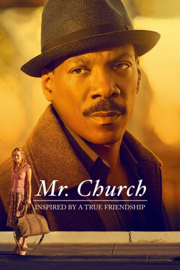

#8798 Mr. Church
 
 IMDB-Wertung: 7.6 / 10
IMDB-Wertung: 7.6 / 10  Tomatometer: 24
Tomatometer: 24  Metascore: 0
Metascore: 0 
Die 10-jährige Charlie (Natalie Coughlin) wacht eines morgens auf, nur um festzustellen, dass in der Küche des Hauses, in dem sie mit ihrer Mutter Marie (Natascha McElhone) lebt, ein Fremder steht und ihr Frühstück zubereitet. Henry Joseph Church (Eddie Murphy) wurde von Maries ehemaligem Liebhaber angeheuert, um solange für Mutter und Tochter zu sorgen, bis Marie stirbt. Da Charlie nichts von der Krankheit ihrer Mutter weiß, begegnet sie dem Koch anfangs mit einigem Misstrauen. Doch Marie lebt viel länger, als ihre Ärzte gedacht hatten, und so entwickelt sich über die Jahre langsam eine freundschaftliche Beziehung zwischen Charlie und Mr. Church, gleichwohl der sonst so freundliche Ersatzvater über sein Privatleben absolutes Stillschweigen hält. Als Marie schlussendlich doch noch ihrer Krankheit erliegt und die mittlerweile am College studierende Charlie nach einem One-Night-Stand schwanger wird, nimmt Mr. Church sie bei sich auf…
Jahr: 2016
Dauer: 105 Minuten
FSK: 6
Land: USA Studio: Cinelou ReleasingTonspuren: DD5.1 - ,
Untertitel: Englisch,
Auflösung: 1080p (1920x1040) Größe: 8171 MB
Genre: Drama, Komödie
Regisseur:  Bruce Beresford
Bruce Beresford
Drehbuch: Susan McMartin
Soundtrack: Mark Isham
Darsteller:
 Eddie Murphy als Henry Church
Eddie Murphy als Henry Church Britt Robertson als Charlie
Britt Robertson als Charlie Natascha McElhone als Marie
Natascha McElhone als Marie Xavier Samuel als Owen
Xavier Samuel als Owen- Lucy Fry als Poppy
- Christian Madsen als Eddie Larson
 Mckenna Grace als Izzy
Mckenna Grace als Izzy- Natalie Coughlin als Young Charlie
 Madison Wolfe als Young Poppy
Madison Wolfe als Young Poppy- Lincoln Melcher als Young Owen
- Kelly Lester als Doctor
- Aileen Burdock als Waitress
- Michael Leone als Michael
- Shawnee Witt als Cashier
 Thom Barry als Frankie Twiggs
Thom Barry als Frankie Twiggs- Adriana Leonard als Checkout Girl
 Jenica Bergere als Nurse
Jenica Bergere als Nurse- Paul Archer als Diner #1
- Francisco Javier Gomez als Diner #2
- Darius Cottrell als Bus Driver
- Amy Sutherland als Neighbor (uncredited)
- Kathleen McMartin als Mrs. Dickerman
- Sara Shearer als Gibby
- Mike Ryan als Bus Driver #1
- Bruce Marshall als Bus Driver #2
- Wyatt Carnel als Kid on Skateboard
- Deanna Buonomo als Student - Party-goer (uncredited)
- Amelia Diaz als Baby Izzy (uncredited)
- Rebecca Diaz als Baby Izzy (uncredited)
- Dakota Lustick als Charlotte's College Boyfriend (uncredited)
- Dora Winifred als Charlotte's Roommate (uncredited)
Datei: X:\2016(G-M)\Mr. Church (2016, FSK6, 1920x1040).mkv seit 30.04.2018
Festplatte: HD 2016(A-Z)
 Es gibt insgesamt 164 Filme in der Gruppe '2016(G-M)'
Es gibt insgesamt 164 Filme in der Gruppe '2016(G-M)'